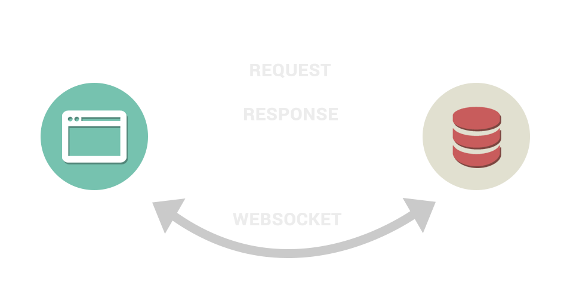
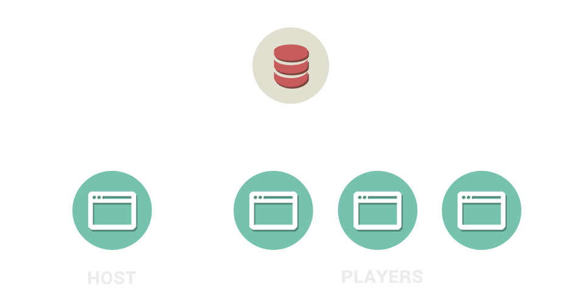
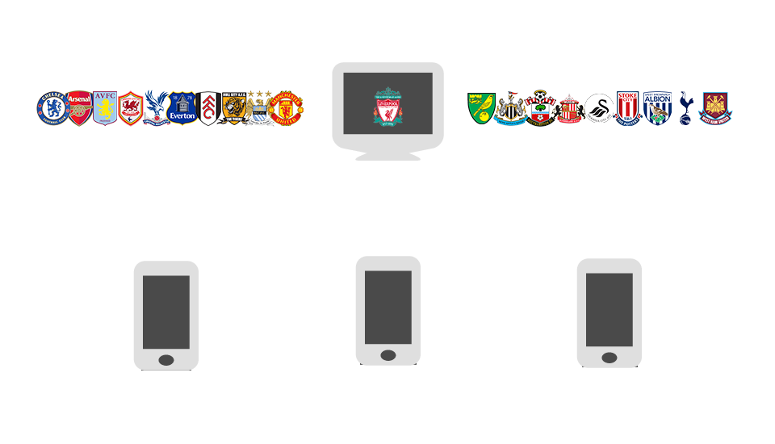

Building a Multiplayer Game in the Browser
#0
Introduction
How this will work.
We'll take this is a couple of stages..
..In each stage we will explore some concepts and then see how it looks in code.
By the end, we'll have a fully working multiplayer game!
Who is this aimed at?

Github
All the code for these slides and the code used throughout the presentation is available on Github.
github.com/mrockall/codeninja#1
Event Driven Web
How the Web Works

HTTP

Server & Client side
Node.js
“Node.js is a platform built on Chrome's JavaScript runtime for easily building fast, scalable network applications. Node.js uses an event-driven, non-blocking I/O model that makes it lightweight and efficient...”
Traditional Web Servers
Event Driven Servers
Synchronous Ninja Restaurant
One waiter per table
Asynchronous Ninja Restaurant

One waiter multiple customers.
Socket.io
“Socket.IO aims to make realtime apps possible in every browser and mobile device, blurring the differences between the different transport mechanisms. It's care-free realtime 100% in JavaScript.”IE 5.5+, Safari 3+, Chrome 4+, Firefox 3+, Opera 10.61+
Sockets & the Web
Our Game
Using Sockets.io
// Setup the web socket
io.socket = io.connect();
// Send an event to the server
io.socket.emit("host:create_game");
// React to an event from the server
io.socket.on('connected', game.onConnected );
Code!
#2
Adding some Backbone
The State of JS
It used to be that JS was used for fancy effects and embellishments. Now though, it's stuff that matters – proper application code as well as the niceties. That means we need to take more care to organise and structure our source.Introduction to Backbone.js - Ben Gourley
Backbone.js
We will use Backbone to structure our game with proven software patterns, separating UI logic from business logic.
Maintainability, Compatibility, Testability, Reusability, DRY-ness, Consistency, Modularity
Backbone.Events
Events is a module that can be mixed in to any object, giving the object the ability to bind and trigger custom named events.
var o = {}
_.extend(o, Backbone.Events)
o.on('zap', function () {
console.log('zapped')
})
o.trigger('zap')
Backbone.Model
Models are the heart of any JavaScript application, containing the interactive data as well as a large part of the logic surrounding it.
var Person = Backbone.Model.extend({
defaults: {
name: '',
age: 0
},
canDrive: function() {
return this.get('age') > 17;
}
});
var person = new Person({ name: "Mike", age: 23});
person.canDrive(); // true
Backbone.Collection
Collections are simply an ordered set of models.
var Song = Backbone.Model.extend({
defaults: {
title: '',
artist: ''
}
});
var Album = Backbone.Collection.extend({
model: Song
});
Backbone.View
Views are used to reflect what your applications' data models look like. They are also used to listen to events and react accordingly.
var SearchView = Backbone.View.extend({
el: $('#search_container'),
events: {
"click input[type=button]": "doSearch"
},
render: function(){
var template = _.template( $("#search_template").html() );
this.$el.html( template );
},
doSearch: function( event ){}
});
var search_view = new SearchView().render();
Backbone.Router
Routers provide methods for routing client-side pages, and connecting them to actions and events.
var Workspace = Backbone.Router.extend({
routes: {
"help": "help", // #help
"search/:query": "search", // #search/ninjas
"search/:query/p:page": "search" // #search/ninjas/p7
},
help: function() {
...
},
search: function(query, page) {
...
}
});
Our Game
Code!
#3
Making a Game of it
What Next?
Now we have a pretty nice codebase, we need to add the logic that will power our game...
Next we'll take a series of problems or questions and work them into our codebase until the game is completely working!
What is the game?
1) How do we start the game on all devices?
// app.Game, models/game.js
players_per_room: 2 // Set a variable in the model
playerJoinedRoom: function() {
...
if(this.Players.length == this.players_per_room){
console.log("== Room limit reached, starting game!");
io.socket.emit('host:start_countdown', this.get('game_id'));
}
...
}
// game.js
io.sockets.in(data.gameId).emit('game:start_countdown', data);
2) Setting up a countdown for the first round.
// app.Views.Home, views/home.js
countdown: function() {
var start_time = 2, $count = $countdown.find(".count");
$count.text(start_time);
// Start a 1 second timer
var timer = setInterval(_.bind(countItDown, this), 1000);
// Decrement the displayed timer value on each 'tick'
function countItDown(){
start_time -= 1
if( start_time <= 0 ){
// Stop the timer and do the callback.
clearInterval(timer);
this.$el.find('.countdown').fadeOut();
app.Game.getRound();
return;
}
$count.text(start_time);
}
}
3) Setting up the data for each round.
// game.js
exports.initGame = function(sio, socket){
...
gameSocket.on('game:get_round', getRoundData);
}
function getRoundData(game_id) {
var league = teams;
league = shuffle(league);
team = league[0];
decoys = league.slice(0,4);
decoys = shuffle(decoys);
// Set up the data object
var data = {
team: team,
answers : decoys
};
io.sockets.in(game_id).emit('game:new_round_data', data);
}
4) Handling user answers
// views/game.js
// Handling the event in game screen
app.Views.Game = Backbone.View.extend({
...
events: {
"click .option": "answer_selected"
},
...
answer_selected: function(ev) {
app.Game.playerAnswer($(ev.currentTarget).find(".inner").text());
}
...
});
// Passing the answer to the Host
app.Models.Game = Backbone.Model.extend({
...
playerAnswer: function(answer) {
var data = {
gameId: this.get("game_id"),
playerId: this.get("socket_id"),
answer: answer,
round: this.get("current_round")
};
io.socket.emit('player:answer',data);
},
...
}
// Check the answer on the Host
checkAnswer: function(answer) {
if(this.isHost()){
this.set('number_of_player_answers', this.get('number_of_player_answers') + 1);
if(answer.answer == this.get('round_answer')){
// Give the Player some points
}
// If everyone has answered this round, new round!
if(this.get('number_of_player_answers') == this.Players.length){
this.getRound();
}
}
}
5) Keeping track of the score
// Timer in Game view
start_round_timer: function() {
var $timer_el = this.$el.find('.timer');
clearInterval(this.points_counter);
this.points_counter = setInterval(_.bind(timer, this), 10);
function timer()
{
var points = app.Game.decreaseAvailablePoints();
$timer_el.text(points);
if (points <= 0) {
app.Game.forceNextRound();
clearInterval(this.points_counter);
return;
}
}
}
// The Game Model
app.Models.Game = Backbone.Model.extend({
points_per_round: 1000,
...
decreaseAvailablePoints: function() {
this.set('available_points', this.get('available_points') - 1);
return this.get('available_points');
},
...
checkAnswer: function(answer) {
...
if(answer.answer == this.get('round_answer')){
console.log("== Correct Answer: Award this many points", this.get('available_points'));
var player = this.Players.getBySocketID(answer.playerId)[0];
player.give_score(this.get('available_points'));
}
...
}
});
6) Showing the score on screen
// Called when rendering the Host Game Screen
render_player_cards: function() {
var $score_cards = this.$el.find('.score_cards')
template = $("#player_scorecard").html();
app.Game.Players.each(_.bind(function(m, i){
var $li = $(template);
$li.addClass('sckt_' + m.get('socket'));
$li.find('.name').text(m.get('name'));
$li.find('.score').text(m.get('score'));
$score_cards.append($li);
m.on('change:score', this.update_player_score, $li);
}, this));
},
// Called any time the score in the model changes
update_player_score: function(a) {
this.find('.score').text(a.get('score'));
}
7) Ending the game
app.Models.Game = Backbone.Model.extend({
...
getRound: function() {
this.set('current_round', this.get('current_round') + 1);
if(this.get('current_round') > this.number_of_rounds){
io.socket.emit('game:over', this.get('game_id'));
} else {
io.socket.emit('game:get_round', this.get('game_id'));
}
},
endGame: function() {
console.log("== End Game");
app.Router.navigate('gameover', {trigger: true, replace: true});
}
});